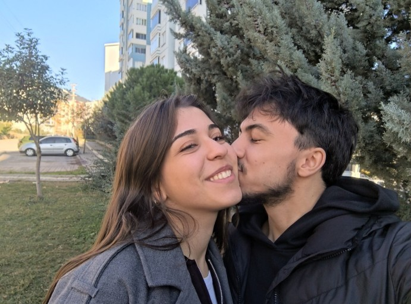

Rujunun parlaklığını bahane ederek kendimi öptürüyorum sana...

Keşke 2011 yılında olsaydık 🥹 hangi yılda olursak olalım birlikte olalım kurban olduğum

Telefonun yoktu bana çıkınca yazamazsin diye koşa koşa parka gitmeye çalışıyorum aklım sadece sende çıktım diyorsun telefonu kaçırdım diyorsun hiç ama hiç beklemediğim bir anda şok geçirdim sevgilim asla unutmayacağım bir gün...

Yapmaya yemin ettiğim o kardan çiçek sırf istedin diye... O güzel gülüşünü bol bol duyduğum senin mutlu oluşunla mutlu olduğum ilk kar yağan gün ilk karımız...